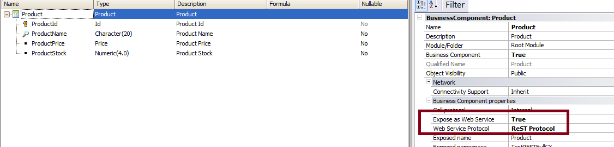
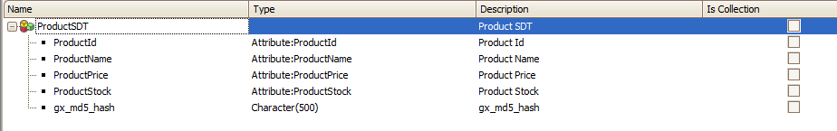

This document explains how to insert new data using a Business Component exposed as a Rest web service in GeneXus.
First, see the basic guidelines:
Use the HttpClient data type.
The HTTP method used for inserting new data is the HTTP POST method.
All the parameters for inserting new data using the BC (except the PK parameters) need to be included in the body of the HTTP request. The message body should be in JSON format and contain the structure of the Business Component as it comes when it makes an HTTP GET.
The easiest way to build the body with the correct format is by defining an Structured Data Type based on the BC structure and using the method to format it to a valid JSON string.
That JSON string needs to be added to the body of the HTTP request before executing the POST to the service.
<server uri>/rest/<module>/<bc name>/<param1>,<param2>,..,<paramN>
Where <param1>,<param2>,..,<paramN> is the compound Primary Key.
If the Primary Key is autonumbered, just use 0 in the URL.
Consider the Product Business Component Transaction that is exposed as a Rest web service, as shown in the figure below:

In this example, you want to insert a new Product, whose ProductId is 5.
You have defined a ProductSDT Structured Data Type based on the Product structure, as shown in the figure below:

Then, the code would be as follows:
&httpclient.Host= &server
&httpclient.Port = &port
&httpclient.BaseUrl = &urlbase
&productSDT.ProductName = "Samsung Galaxy"
&productSDT.ProductPrice = 22
&httpclient.AddString(&productSDT.ToJson())
&httpclient.AddHeader('content-type','application/json')
&httpclient.Execute('POST','Product/5')
if &httpclient.StatusCode = 201
msg("Data successfully added")
else
msg("There was an error retrieving the data: " + &httpclient.StatusCode.ToString())
endif
Download the sample from Sample insert data using a Rest BC
Business Components as Rest web services in GeneXus
| Backlinks | |
| OpenAPI import tool | |
| OpenAPI import tool (GeneXus 17 upgrade 5 or prior) | Toc:Rest web services in GeneXus |